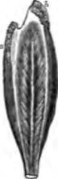

33. Muscular Substance
Description
This section is from the book "Animal Physiology: The Structure And Functions Of The Human Body", by John Cleland. Also available from Amazon: Animal Physiology, the Structure and Functions of the Human Body.
33. Muscular Substance
Muscular Substance consists in greater part of muscle-fibrin, a description of albuminoid material which, in the form in which it is found after death, is termed syntonin, and is distinguished from other varieties of fibrin by being soluble in dilute hydrochloric acid. It would appear, however, that during life the muscle-fibrin is in a fluid condition, and differs from the syntonin found after death; and it has, therefore, been distinguished as myosin. That a slight decomposition sets in soon after death, seems certain from the circumstance that dead muscle has an acid reaction, whereas muscle which is still contractile is neutral or slightly alkaline, except after being thrown into a state of spasm.
Although muscle-fibrin is the principal solid constituent of muscle, there are numerous others which occur in small quantity in solution, some of them containing nitrogen and others not. The nitrogenous substances referred to are all of them much simpler in chemical constitution than the albuminoids, and the most important of them is called kreatin, of which it is sufficient to note that it and its allies are of a composition less complex than gelatin, and more complex than urea. Among the non-nitrogenous substances found in muscles may be mentioned grape sugar, and another variety of sugar called inosite, also lactic, butyric, and other acids. These various substances, both those which contain nitrogen and those which do not, are probably formed by processes of decomposition incident to activity of the muscular fibre, for their quantity is greater in muscle whose irritability has been exhausted by electric stimulus, than in muscle which has been at rest. Thus the hind limbs of a frog have been separated from the animal, and one of them has been subjected to severe electric stimulus, while the other has been left at rest; and the muscles of the stimulated limb have yielded a notably larger amount of substance soluble in alcohol than those of its fellow (Helmholtz).
34. During life, however, muscular action is sustained by the combustion not of nitrogenous material but of non-nitrogenous. This has been proved by a variety of experiments, in which persons have been kept for days on a weighed diet of known composition, and their urine and other excreta have been daily analysed; and it has been found that on days on which they took violent exercise, they lost no more nitrogen than on days when they were at perfect rest. By other experiments it is known that the amount of carbonic acid given off by the lungs is greatly increased by exercise. A muscle may, therefore, be compared with an engine which consumes in its work, not its own substance, but fuel. This fuel is carbonaceous material, which is converted with the aid of oxygen into carbonic acid and water; while it is in the intervals of rest that the proper substance of the muscle, consisting of albuminoid material, undergoes growth and repair.
35. Although the normal stimulus to muscular contraction is derived through nerves, the muscles may be excited to contract by various other stimuli, mechanical, chemical, and electrical, and by heat and cold. Isolated muscular fibres, both striped and unstriped, have been made to contract under the microscope. The irritability of muscular fibre is, therefore, inherent in itself, and not due to its nervous connections. Complete contraction sustained for a short time is followed by a condition of exhaustion or temporary loss of irritability; but the duration of contractile power may be greatly increased in the pathological spasm termed tetanus, the condition which constitutes lockjaw when it affects the muscles of mastication. However, a certain slight amount of habitual contraction of a continuous description, distinguished as tonicity, exists in a number of muscles, possibly in all; and we shall find it illustrated in the coats of arteries, and in the circular muscles called sphincters, which keep the orifices around which they are situated closed; for example, the pyloric orifice of the stomach.
The irritability of muscle continues for some time after the death of the animal, and in some cold-blooded animals may continue for days. The properties of living muscle can therefore be studied on parts separated from the bodies of animals. A block of living muscle placed in the circuit of a galvanometer exhibits a remarkable description of electric tension so long as it is quiescent. A galvanometer is an instrument which indicates the presence and direction of electric currents in a wire by means of the deviations of a magnetic needle placed over an insulated coil. If the circuit of the wire be completed by making contact with the transversely cut extremities of the block of muscle, or with points equally distant from the centre, no current is exhibited; but if the contact be made with any other points, the galvanometer indicates the passage of a current through the wire from the point nearest the centre of the block of muscle to the other; and this current is strongest when one point of contact is at the centre of the block, and the other at one extremity. If, however, the muscle be made to contract, the condition of electric tension ceases.
36. Some time after death, at a period said to vary from ten minutes to eighteen hours, or longer, a state of rigidity of the muscles sets in, termed cadaveric rigidity or rigor mortis. It begins in the face, and extends successively to the trunk and upper and lower limbs, and disappears from the parts in the same order, after lasting for a period varying from a few hours to several days, and longest in those instances in which it has set in latest. It is longest delayed and most marked in strong subjects who have been cut off in full vigour. It never sets in till after the disappearance of irritability, and that circumstance is sufficient to show that it is not, as has sometimes been supposed, a contraction of the muscles. Rigor mortis is often so intense as to render it impossible to alter the attitude of the limbs without tearing the muscles or damaging the bones; but it never alters the position in which the body is lying; for example, it does not raise the jaw when it has dropped in death; and in this it differs obviously from muscular contraction. The use of muscles is to produce movement by their contraction; and when two opposing groups are both made spasmodically rigid, as may happen in tetanus, the stronger overcomes the other. But so far from this being the case in rigor mortis, it is known to every undertaker that a body stiffens in whatever position it is placed in. No doubt some apparently well authenticated stories are on record of movements of the limbs taking place in persons who had died of yellow fever; but, however difficult such cases may be to account for, the very circumstance that the movements were neither spasms nor mere twitchings, but of a combined description, shows that they were not a variety of rigor mortis, and did not originate in the muscular texture, but in the nerves; and the explanation of them must be sought in some irritation of the central nervous system, probably by a product of decomposition, before irritability had ceased in the muscles. It appears, then, that rigor mortis produces no change in the length of the muscles; and there seems good reason to accept the hypothesis that it is a phenomenon due to chemical change which coagulates the myosin; but it must be admitted that we are not yet properly acquainted with the chemical distinctions of muscle prior to, during, and subsequent to rigor mortis.
Fig. 32. Deep surface of soleus muscle.
Continue to: